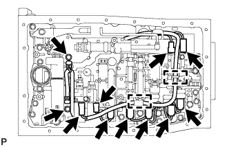
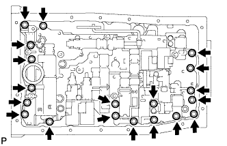

VALVE BODY ASSEMBLY > REMOVAL |
| 1. DRAIN AUTOMATIC TRANSMISSION FLUID |
Remove the drain plug and gasket, and drain the ATF.
Install a new gasket and the drain plug.
| 2. REMOVE AUTOMATIC TRANSMISSION OIL PAN SUB-ASSEMBLY |
 |
Remove the 20 bolts, oil pan and gasket from the transmission.
Examine the particles in the pan.
Remove the 4 magnets and use them to collect steel particles. Carefully inspect the foreign matter and particles in the pan and on the magnets to anticipate the type of wear you will find in the transmission.
Steel (magnetic): bearing, gear and clutch plate wear
Brass (non-magnetic): bush wear
| 3. REMOVE VALVE BODY OIL STRAINER ASSEMBLY |
 |
Remove the 4 bolts and oil strainer.
Remove the O-ring from the oil strainer.
| 4. DISCONNECT TRANSMISSION WIRE |
|  |
Remove the 2 bolts and 2 temperature sensor clamps.
Disconnect the 2 ATF temperature sensors.
Disconnect the 9 solenoid valve connectors.
Detach the wire harness from the 2 clamps.
| 5. REMOVE TRANSMISSION VALVE BODY ASSEMBLY |
Remove the bolt, detent spring cover and detent spring.
|  |
Remove the 19 bolts and valve body.
Remove the check ball body and spring.